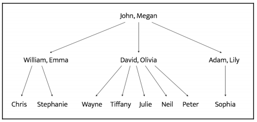
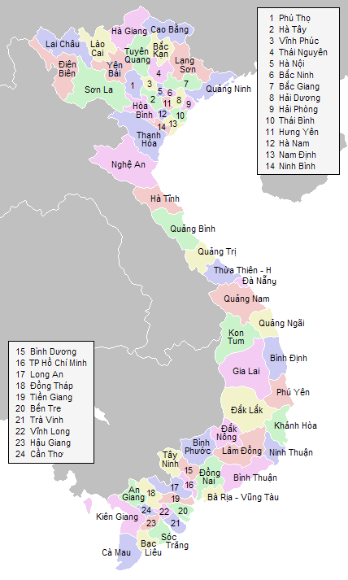

6
Logic Programing
Trong chương này chúng ta sẽ học về làm thế nào để viết một chương trình sử dụng logic programing. Chúng ta sẽ bàn luận về nhiều kiểu mẫu lập trình khác nhau và xem làm thế nào để xây dựng chương trình cùng với logic programing. Chúng ta sẽ học về xây dựng những khối (building blocks) cho lập trình logic ,cách giải quyết vấn đề trong lĩnh vực này. Chúng ta sẽ triển khai các chương trình Python để xây dựng một chương trình để giải quyết các vấn đề đa dạng.
Các thứ bạn có thể học được sau khi giải quyết chương này:
Lập trình logic là gì ?
Lập trình logic là một mô hình lập trình (programming paradigm). về cơ bản thì nó là một cách tiếp nhận với lập trình. Trước khi chúng ta nói về nó có liên quan gì đến AI thì hãy nói về mô hình lập trình.
Khái niệm về mô hình lập trình phát sinh do nhu cầu phân loại ngôn ngữ lập trình. Nó chỉ ra cách mà các chương trình máy tính giải quyết vấn đề thông qua code. Một vài mô hình lập trình chủ yế liên quan đến ý nghĩa hoặc trình tự của các hoạt đọng được sử dụng để đạt được kết quả. Các mô hình lập trình khác quan tâm đến cách chúng ta tổ chức code.
Đây là một vài mô hình lập trình thường thấy:
Để hiểu về lập trình logic, chúng ta hãy tìm hiểu về khái niệm tính toán và suy đoán. Để tính toan một cái gì đó, chúng ta bắt đầu với một biểu thức và một bộ quy tắc. Bộ quy tắc này là một trương trình cơ bản.
Chúng ta sử dụng những biểu thức và những quy tắc để tạo ra kết quả output. Ví dụ ta muốn tính tổng của 23,12 và 49 phương pháp là như sau
23+12+49=>(3+2+9)->)1+(2+1+4)|4=>84
Mặt khác nếu chúng ta muốn suy luận một cái gì đó, chúng ta cần bắt đầu từ một phương pháp phỏng đoán. Sau đó chúng ta cần xây dựng một lập luận dựa theo một bộ quy tắc. Về bản chất, quá trình tính toán là máy móc cần độ chính xác, còn quá trình phỏng đoán (deduction) thì sáng tạo hơn.
Khi chúng ta viết một chương trình trong mô hình lập trình logic(logic programming paradigm), Chúng ta sẽ chỉ định ra một tập câu lệnh dựa trên sự việc xảy ra và quy tắc về vấn đề gặp phải và một cách giải quyết để giải quyết việc đó dựa trên những thông tin .
Hiểu về cách xây dựng các khối của lập trình logic( building blocks of logic programming)
Trong lập trình hướng đối tượng (OOP) hoặc mô hình lập trình mệnh lệnh (imperative paradigms), Chúng ta luôn luôn phải định nghĩa các biến . Trong lập trình logic có một chút khác biệt. Chúng ta có thể truyền một tham số chưa được khởi tạo tới một hàm và một thông dịch viên sẽ khởi tạo biến cho chúng ta bằng cách tìm kiếm những yếu tố được định nghĩa bởi người dùng. Nó là một cách mạnh mẽ để tiếp cận vấn đề khớp về biến. Quá trình khớp các biến cùng với các mục khác nhau được gọi là hợp nhất (unification). Đây là tính năng nổi bật nhất của lập trình logic. Chúng ta cần chỉ định một vài thứ được gọi là các mối tương quan (quan hệ) trong lập trình logic. Những mối quan hệ này được định nghĩa bởi các mệnh đề gọi là những cơ sở lập luận (facts) và những quy tắc (rules).
Những cơ sở lập luận (Facts) là những tuyên bố sự thật về chương trình của chúng ta và dữ liệu nó đang sử dụng. Cấu trúc khá đơn giản. VD A là con của B, thì đây là tuyên bố. còn câu nói ai là con của B thì nó không thể là một tuyên bố được. Mỗi chương trình logic cần có các cơ sở lập luận để làm việc, để nó có thể đạt được mục đích nhất định dựa trên các cơ sở đó.
Quy tắc (rules) là những thứ chúng ta phải học để diễn đạt lại các cơ sơ lập luận (facts) và làm cách nào để đặt ra câu hỏi về nó. Chúng là những ràng buộc mà chúng ta phải làm việc cùng với nó và nó cho phép chúng ta thực hiện các kết luận về những vấn đề . Ví dụ, Làm thế nào để xây dựng một máy đánh cờ. Bạn cần phải định nghĩa tất cả các quy tắc để các quân cờ di chuyển trên bàn cờ. Về cơ bản thì kết luận cuối cùng chỉ có giá trị nếu tất cả các mối quan hệ là đúng.
Giải quyết vấn đề sử dụng lập trình logic
Lập trình logic tìm kiếm phương pháp bằng cách sử dụng cơ sở lập luận (facts) và quy tắc (rules). Chúng ta cần chỉ định đích đến cho mỗi chương trình. Trong trường hợp này một chương trình logic và một đích đến không có một biến nào cả, Một bộ phận giải quyết vấn đề sẽ đưa ra một cái cây và cấu thành không gian tìm kiếm ddeeer giải quyết vấn đề và đạt được đích đến.
Một trong những thứ quan trọng nhất trong lập trình logics là làm sao để chúng ta đưa ra được các quy tắc. Các quy tắc có thể xem như là các câu lệnh logic, Hãy xem xét vấn đề sau:
Kathy thích chocolate=> Alex yêu Khathy
Các này có thể đọc theo kiểu: Nếu Kathuy thích chocolate mà Alex lại thích Kathe thì nó cũng có thể được hiểu là Kathy thích chocolate của thằng Alex ngụ ý là Alex thích Kathy ngu vl nhưng ví dụ nào tao đéo hiểu lắm các mày tự nghĩ nhé .
Thêm ví dụ khác: Crime movies, English=> Martin Scorsese. Nó có thể hiểu một cách logic như sau.: Nếu mày thích phim Crime movies bằng tiếng anh thì mày cũng có thể thích phim tạo của Martin Scorsese.
Cấu trúc suy luận ngu ngu kiểu này sẽ được sử dụng nhiều trong suốt quá trình học lập trình logic. Giờ thì hãy xem làm việc này trong python thì làm thế nào
Cài đặt các package Python mới
Trước khi học về lập trình logic trong python chúng ta cần install thêm 2 package là logpy và sympy nếu dùng pip3 để install gõ câu lệnh vào terminal:
$pip3 install kanren
$pip3 install sympy
Ngoài ra nếu bạn dùng pycharm thì đơn giản hơn :
Chọn File->Settings->Project Interpreter -> bấm vào dấu + Gõ vào ô tìm kiếm kanren chọn install
làm tương tự với sympy. done
hoặc lên source gits của trang logpy để xem cách cài khác https://pypi.org/project/kanren/
Cách khác clone package từ github
git clone git://github.com/sympy/sympy.git my_folder
cd my_folder
python setup.py build
python setup.py install
Hoặc cài trực tiếp :
pip install -e git+https://github.com/hmmlearn/hmmlearn.git#egg=hmmlearn
Các biểu thức toán học tương xứng
Chúng ta gặp rất nhiều các phép toán trong rất nhiều hoạt động khác nhau. Lập trình logic rất hiệu quả trong việc so sánh các biểu thức và tìm các giá trị chưa biết.
Lets code:
from kanren import run,var,fact
import kanren.assoccomm as la
#Tạo hai phép tính toán học cơ bản
add='addition'
mul='multiplication'
# Hai phép cộng(add) và nhân(mul là hai phép tính có tính chất giao hoán(commutative) và kết hợp(associative). thử tính nào:
fact(la.commutative,mul)
fact(la.associative,mul)
fact(la.commutative,add)
fact(la.associative,add)
# Tạo ra một vài biến :
a,b,c=var('a'),var('b'),var('c')
# ta xét thử biểu thức sau:
#expression_orig=3*(-2)+(1+2*3)x(-1)
# giơ thì thử ẩn biểu thức trên với các biến .
# ta có biểu thức 1 expression1=(1+2*a)*b+3*c
# biểu thức 2 expression2=c*3+bx(2*a+1)
# biểu thức 3 expression3=(((2*a)*b)+b+3*c
# Các mày hãy thử quan sát xem có thấy cả ba biểu thức đều biểu hiện một biểu thức cơ bản. Nhiệm vụ của chúng ta là kết hợp các biểu thức cùng với biểu thức cơ bản để tìm những biến ẩn không biết
# Tạo biệu thức
original_expression=(add,(mul,3,-2),(mul,(add,1,(mul,2,3)),-1))
expression1=(add,(mul,(add,1,(mul,2,a)),b),(mul,3,c))
expression2 = (add, (mul, c, 3), (mul, b, (add, (mul, 2, a), 1)))
expression3 = (add, (add, (mul, (mul, 2, a), b), b), (mul, 3, c))
# So sánh các biểu thức cùng biểu thức mẫu. Phương thức run thường được sử dụng trong karen. phương thức này lấy tham số input và chạy các biểu thức.
# Tham số đầu tiên đầu tiên là số của giá trị, tham số thứ 2 là một biến, và tham số thứ 3 là một hàm
k1=run(0,(a,b,c),la.eq_assoccomm(expression1,original_expression))
k2=run(0,(a,b,c),la.eq_assoccomm(expression2,original_expression))
k3=run(0,(a,b,c),la.eq_assoccomm(expression3,original_expression))
print(k1)
print(k2)
print(k3)
Chạy đoạn code trên bạn sẽ có kết quả sau
((3, -1, -2),)
((3, -1, -2),)
()
Ba giá trị trong 2 dòng đầu tiên là giá trị của 3 biến a,b,c. Hai dòng đầu tiên vì biểu thức của chúng giống với biểu thức gốc (original_exp) còn dòng cuối cùng vì biểu thức của nó cũng giống nhưng về mặt cấu trúc nó khác nên kết quả là rỗng. So sánh mẫu làm việc bằng cách so sánh cấu trúc của biểu thức nên nó không trả lại kết quả .
Tìm số nguyên tố
Hãy xem làm thế nào để sử dụng lập trình logic để kiểm tra một số có phải số nguyên tố không. Chúng ta sẽ sử dụng cấu trúc có sẵn trong Kanren để xác định một số được cho trong một danh sách có phải là số nguyên tố hay không
import kanren.core as kc
import itertools as it
from kanren import membero,isvar
from sympy.ntheory.generate import prime,isprime
# Tiếp theo tạo một hàm để kiểm tra số được cho có phải là số nguyên tố hay không dựa trên dạng của dữ liệu. Nếu nó kiểu số thì mọi việc đơn giản. Nếu nó không phải số chúng ta phải chạy một cách hàm lại
# Hàm conde là cấu trúc cung cấp các phép toán AND và OR
# Hàm condeseq giống như conde nhưng nó hỗ trợ lặp:
def check_prime(x):
if isvar(x):
return kc.condeseq([(kc.eq,x,p)] for p in map(prime,it.count(1)))
else:
return kc.success if isprime(x) else kc.fail
# Tạo biến x để sử dụng
x=kc.var()
# tạo một dãy số và check nếu sô đó là số nguyên tố hay không
# hàm membero kiểm tra nếu một số đã cho là một phần trong danh sách các số được chỉ định trong tham số đầu vào:
list_num=(23,4,27,17,13,10,21,29,3,32,11,19)
print("Danh sách của các nguyên tố")
print(set(kc.run(0,x,(membero,x,list_num),(check_prime,x))))
# Dùng hàm trên theo cách khác
print("7 số nguyên tố đàu tiên: ")
print(kc.run(7,x,check_prime(x)))
Kết quả output:
Danh sách của các nguyên tố
{3, 11, 13, 17, 19, 23, 29}
7 số nguyên tố đàu tiên:
(2, 3, 5, 7, 11, 13, 17)
Phân tích cây phả hệ
Bây giờ chúng ta đã quen thuộc hơn với lập trình logic. Hãy sử dụng nó để giải quyết một vấn đề thú vị nào. Ta có một cây phả hệ như sau:

John và megan có 3 người con, William,David và Adam. vợ của William David và adam lần lượt là Emma Olivia và Lily……… Tự đọc đi nhá đứa nào cũng có kiến thức cơ bản rồi.
Dựa trên những tuyên bố như trên (base on the facts), chúng ta có thể tạo một chương trình cây phả hệ có thể nói cho chúng ta biết ông của thằng Wayne là ai hay Chú của Sophi là ai. Dù chúng ta không chỉ định bất cứ một thứ gì về ông bà hay mối quan hệ khác như chú cháu, lập trình logic có thể suy luận ra nó.
Chúng ta có một cây phả hệ trong file json như sau :
{
"father":
[
{"John": "William"},
{"John": "David"},
{"John": "Adam"},
{"William": "Chris"},
{"William": "Stephanie"},
{"David": "Wayne"},
{"David": "Tiffany"},
{"David": "Julie"},
{"David": "Neil"},
{"David": "Peter"},
{"Adam": "Sophia"}
],
"mother":
[
{"Megan": "William"},
{"Megan": "David"},
{"Megan": "Adam"},
{"Emma": "Stephanie"},
{"Emma": "Chris"},
{"Olivia": "Tiffany"},
{"Olivia": "Julie"},
{"Olivia": "Neil"},
{"Olivia": "Peter"},
{"Lily": "Sophia"}
]
}
Nó là một file json chỉ có mối quan hệ là cha và mẹ. Chú ý chúng ta không chỉ định bất cứ thứ gì khác như là chồng hay vợ ông bà chú bác gì ở đây.
Giờ chúng ta dùng Python để làm việc đó
import json
from kanren import Relation,facts,run,conde,var,eq
# Tạo một hàm để kiểm tra nếu X là cha mẹ của Y chúng ta sẽ sử dụng suy luận nếu X là cha mẹ cảu y thì X cũng đông thời là cha hoặc mẹ. nếu chúng ta định nghĩa "Bố" hay "Mẹ" vào bên trong fact:
# khởi tạo mối quan hệ father và mother
father=Relation()
mother=Relation()
def parent(x,y):
return conde([father(x,y)],[mother(x,y)])
# Tạo một hàm để kiểm tra nếu x là ông bà của y. sau đó chúng ta sẽ suy ra là nếu x là ông bà của y thì có nghĩa là con của x là bố mẹ của y
def grandparent(x,y):
temp=var()
return conde((parent(x,temp),parent(temp,y)))
#Tạo một hàm nếu x là anh chị em của y. Chúng ta sẽ sử dụng logic nếu x là anh chị em của y thì suy ra x,y có cùng cha mẹ. Chú ý khi chúng ta liệt kê tất cả danh sách anh chị em của x. thì
# x cũng được liệt kê bởi vì x cũng thỏa mãn các điều kiện so sánh. Vì thế khi chúng ta in ra kết quả chúng ta phải loại bỏ x trong danh sách:
def sibling(x,y):
temp=var()
return conde((parent(temp,x),parent(temp,y)))
# Tạo hàm để kiểm tra nếu x là chú của y. Chúng ta sẽ tính toán logic là nếu x là chú của y, thì ông bà của x sẽ là bố mẹ của y. Chú ý ở đây là khi chúng ta liệt kế tất cả danh sách
# chú của x, thì bố của x cũng thỏa mãn điều kiện. Vì thế chúng ta sẽ phải loại bỏ bố của x ra khỏi danh sách các ông chú
def uncle(x,y):
temp=var()
return conde((father(temp,x),grandparent(temp,y)))
# Tạo hàm main:
if __name__=='__main__':
#Load data từ file json
with open("data/chap6/relationships.json") as f:
d=json.loads(f.read())
for item in d['father']:
facts(father,(list(item.keys())[0],list(item.values())[0]))
for item in d['mother']:
facts(mother,(list(item.keys())[0],list(item.values())[0]))
# tạo biến x
x=var()
# Giờ thì thử đặt vài câu hỏi và tìm xem bộ giải mã của chúng ta có trả lời đúng không
name='John'
ouput=run(0,x,father(name,x))
print("Danh sách con của ",name,"là :")
for item in ouput:
print(item)
# Tìm mẹ cho william
name='William'
output=run(0,x,mother(x,name))
print("Danh sách mẹ của ",name,"là")
for item in output:
print(item)
#Tìm ông bà của Wayne
name='Wayne'
output=run(0,x,grandparent(x,name))
print("ông bà của ",name)
for item in output:
print(item)
# Tìm các cháu của Megan
name='Megan'
output=run(0,x,grandparent(name,x))
print("Danh sách cháu của ",name,"là")
for item in output:
print(item)
# Liệt kê các cặp vợ chồng
a,b,c=var(),var(),var()
output=run(0,(a,b),(father,a,c),(mother,b,c))
print("Danh sách các cặp vợ chồng")
for item in output:
print("Chồng: ",item[0],"\t\t<==>\t\t ","Vợ: ",item[1])
Kết quả thu được tại output:
Danh sách con của John là :
Adam
David
William
Danh sách mẹ của William là
Megan
ông bà của Wayne
Megan
John
Danh sách cháu của Megan là
Neil
Sophia
Chris
Peter
Stephanie
Wayne
Tiffany
Julie
Danh sách các cặp vợ chồng
Chồng: William <==> Vợ: Emma
Chồng: Adam <==> Vợ: Lily
Chồng: David <==> Vợ: Olivia
Chồng: John <==> Vợ: Megan
Phân tích địa lý
Giờ thì ta thử dùng lập trình logic để xây dựng một bộ phân tích địa lý. Vấn đề cần giải quyết ở phần này là chúng ta sẽ chỉ ra thông tin về vị trí của nhiều bang ở US và say đó yêu cầu trương trình của chúng ta trả lời những câu hỏi khác nhau dựa trên facts và rules. VD đây là bản đồ của nước Đông Lào

Sẽ có 2 file kèm theo trong thư mục data/chap6/adjacent_provinces.txt và coastal_provinces.txt ( những tỉnh liền kề nhau và những tỉnh ven biển). Những file này chứa thông tin các tỉnh nằm gần nhau ở việt nam và các tỉnh ven biển. Dựa vào thông tin này chúng ta có thể tìm thông tin bằng cách suy luận logic vd: Tỉnh nào giáp HCM mà lại giáp biển,Tỉnh x có nằm gần tỉnh Y không?, …..
code:
from kanren import run,fact,eq,Relation,var
# Tạo mối quan hệ tập mối quan hệ
adjacent=Relation()
coastal=Relation()
# Load File Data chứa dữ liệu các tỉnh ven biển
with open("data/chap6/coastal_provinces.txt",'r',encoding='utf8') as f:
line=f.read()
coastal_provinces=line.split(',')
for province in coastal_provinces:
#Duyệt tất cả các tỉnh ven biển và đưa thông tin vào trong cơ sở thực tế ( put information to the fact)
#print(province)
fact(coastal,province)
# Load File Data chứa dữ liệu các tỉnh nằm kề nhau
with open("data/chap6/adjacent_provinces.txt",'r',encoding='utf8') as f:
adj_list=[line.strip().split(',') for line in f if line and line[0].isalpha()]
#print(adj_list)
# Thêm thông tin tỉnh liền kề vào trong fact base
for L in adj_list:
head,tail=L[0],L[1:]
for province in tail:
fact(adjacent,head,province)
# Tạo biến x và y
x=var()
y=var()
# Giờ thì chạy đc rồi hỏi thằng ngu này vài câu xem nào
#Tỉnh Nam Định Có gần Thái Bình?
output=run(0,x,adjacent('Nam Định','Ninh Bình'))
print("Tỉnh Nam Định Có gần Thái Bình?: ")
print('Có' if len(output) else 'Không')
# Các tỉnh tiếp giáp Hà Nội
output=run(0,x,adjacent('Hà Nội',x))
print("Các tỉnh tiếp giáp Hà Nội")
for province in output:
print(province)
#
print("Liệt kê các tỉnh ven biển nằm gần Hồ Chí Minh")
output=run(0,x,adjacent("Hồ Chí Minh",x),coastal(x))
for province in output:
print(province)
print("Liệt kê các tỉnh nằm giữa Đà Nẵng Và Quảng Nam")
output=run(0,x,adjacent('Đà Nẵng',x),adjacent('Quảng Nam',x))
if len(output):
for province in output:
print(province)
else:
print("Méo Có")
print("Liệt kê 7 tỉnh giáp một tỉnh ven biển")
n=7
output=run(n,x,coastal(y),adjacent(x,y))
if len(output):
for province in output:
print(province)
else:
print("Méo có")
Output:
Tỉnh Nam Định Có gần Thái Bình?:
Có
Các tỉnh tiếp giáp Hà Nội
Thái Nguyên
Bắc Giang
Vĩnh Phúc
Phú Thọ
Hòa Bình
Hà Nam
Hưng Yên
Bắc Ninh
Liệt kê các tỉnh ven biển nằm gần Hồ Chí Minh
Vũng Tàu
Tiền Giang
Liệt kê các tỉnh nằm giữa Đà Nẵng Và Quảng Nam
Thừa Thiên Huế
Liệt kê 7 tỉnh giáp một tỉnh ven biển
Bình Định
Vĩnh Long
Tiền Giang
Hà Nam
Nghệ An
Lâm Đồng
Thừa Thiên Huế
Xây dựng một máy giải câu đố đơn giản
Một trong những ứng dụng của lập trình logic là giải câu đố. Chúng ta có thể chỉ ra các điều kiện của một cau đó và trương trình sẽ đưa ra giải pháp. Trong phần này chúng ta sẽ đưa ra vài phần thông tin khác nhau về 4 người và sẽ hỏi về những phần thông tin còn thiếu.
Trong chương trình locgic, Chúng ta sẽ đưa ra những thông tin như sau:
Câu hỏi ở đây ta cần tìm là người nuôi thỏ. Ta có một bảng chi tiết về thông tin 4 người như sau
Tên |
Thú cưng |
Màu xe |
Quốc gia |
Tèo |
Chó |
Xanh |
Tàu |
Tý |
? |
Trắng |
Đông Lào |
Sửu |
Mèo |
Vàng |
Lào |
Dần |
? |
Đen |
Thái |
Dựa vào bảng thông tin trên ta đã tóm tắt cơ bản đề bài. Màu Trắng, Vàng là tự thêm vào cho vui.
Giờ thì thử code nào:
from kanren import *
from kanren.core import lall
# Tạo biến people
people=var()
# Tạo luật dùng half lall. luật đầu tiên ở đây là ta có 4 người, và các thông tin khác
rules=lall(
# Khai báo 4 người
(eq,(var(),var(),var(),var()),people),
# Người đầu tiên là Tèo thằng này có cái xe màu xanh
(membero,('Tèo',var(),'Xanh',var()),people),
# Thông tin thứ 2: thằng này có mèo và sống ở Lào
(membero,(var(),'Mòe',var(),'Lào'),people),
# Thông tin thứ 3: cu Tý sống ở Đông lào
(membero,('Tý',var(),var(),'Đông Lào'),people),
# Thông tin thứ 4: thằng đi xe đen sống ở Thái
(membero, (var(), var(), 'Đen', 'Thái'), people),
# Thông tin thứ 5: Sửu nuôi mèo
(membero, ('Sửu', 'Mòe', var(), var()), people),
# Thông tin thứ 6: Dần ở Thái
(membero, ('Dần', var(), var(), 'Thái'), people),
#Thông tin thứ 7: Nuôi chó sống ở Tàu
(membero, (var(), 'Chó', var(), 'Tàu'), people),
# Câu hỏi ở đây là thằng thỏ sống ở đâu,ai nuôi nó
(membero, (var(), 'Thỏ', var(), var()), people)
)
# Thử chạy phần giải quyết vấn đề xem thế nào
# Gồm 3 biến run(n,x,*goals)
solutions=run(0,people,rules)
# lấy thông tin từ solutions :\ Lấy thông tin từ solutions đầu tiên[0]
output=[house for house in solutions[0] if 'Thỏ' in house]
# Lấy vị trí từng solution sẽ có dạng như ta đã đặt trên rules và output là thông tin chứa nhà có con thỏ có dạng [('Tý', 'Thỏ', var(), 'Đông Lào')]
print("Thằng nuôi thỏ là thằng: "+output[0][0])
attrs=['Tên','Thú Nuôi','Màu Xe',"Quốc gia"]
# Giờ thì in thử tất cả các solution ra xem
for i in solutions:
print('\n' + '\t\t'.join(attrs))
print("=" * 50)
for item in i:
print('')
print('\t\t\t'.join([str(x) for x in item]))
Kết quả ở output:
Thằng nuôi thỏ là thằng: Tý
Tên Thú Nuôi Màu Xe Quốc gia
==================================================
Tèo Chó Xanh Tàu
Sửu Mòe ~_9 Lào
Tý Thỏ ~_11 Đông Lào
Dần ~_13 Đen Thái
Nhìn vào kết quả trên ta có thể thấy kết quả không biết đã được nhập vào bằng chương trình dự đoán kết quả của chúng ta. Một vài thông tin vẫn có dạng 'x_n' dưới dạng var() bởi vì thông tin chúng ta có là chưa đủ để giải quyết hết vấn đề. Nếu bạn muốn tất cả các thông tin dễ hiểu hơn thì có thể thêm những thông tin chúng ta giả định vào như sau:
(membero, (var(), 'Chim Cu', var(), var()), people),
(membero, (var(), var(), 'Trắng', var()), people),
(membero, (var(), var(), 'Vàng', var()), people)
khi đó kết quả đầu ra nhìn sẽ đẹp hơn 1 chút:
Thằng nuôi thỏ là thằng: Tý
Tên Thú Nuôi Màu Xe Quốc gia
==================================================
Tèo Chó Xanh Tàu
Sửu Mòe Trắng Lào
Tý Thỏ Vàng Đông Lào
Dần Chim Cu Đen Thái
Chương trình này đã chứng minh được là có thể giải quyết vấn đề khi có nhưng thông tin(dù không đầy đủ). Bạn có thể dựa vào đó để xây dựng một vài bộ giải quyết vấn đề như trên.
Tổng kết chương:
Trong chương này, chúng ta đã học cách viết một chương trình sử dụng lập trình logic. Chúng ta đã thảo luận về nhiều mô hình lập trình để xây dựng chương trình. Chúng ta đã hiểu làm cách nào để xây dựng 1 chương trình bằng lập trình logic. Chúng ta học về cách xây dựng các khối khác nhau (various block) của lập trình logic và thảo luận về cách giải quyết vấn đề trong phần này.
Trong chương tiếp theo chúng ta sẽ học về kỹ thuật tìm kiếm Heuristic và sử dụng thuạt toán đó để giải quyết vấn đề trong thực tế